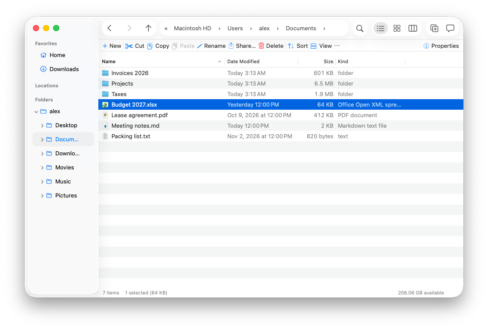
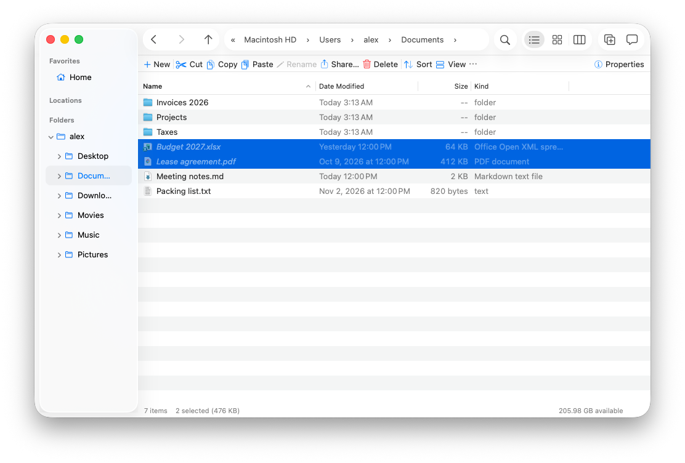
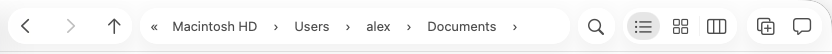
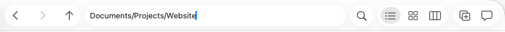
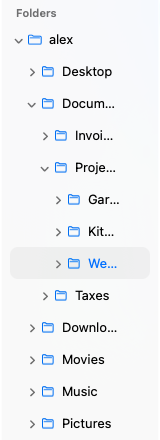
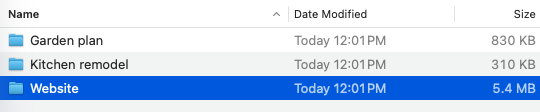
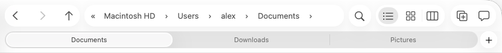
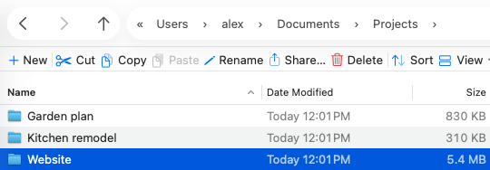
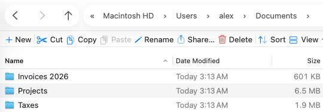

Finder, with the good parts of Explorer.
A native file manager for macOS 26. Cut and paste that moves files, an address bar you can type in, a folder tree, and folder sizes.
Homebrew
Or one line in Terminal.
brew install --caskroniburd/macexplorer/macexplorerFree, open source, and it updates itself. Not notarized yet: if macOS won't open it the first time, run
xattr -dr com.apple.quarantine /Applications/MacExplorer.app once.

Why we built it
A file manager should make everyday jobs quick: moving files, getting to a folder, seeing where you are and what's taking space. MacExplorer is a native AppKit app that does those well and stays fast in folders with 100,000 files.
Finder gets a lot right, so we kept it: Quick Look, tags, the sidebar, Liquid Glass, the ⌘ shortcuts. Where Finder makes those jobs harder than they need to be, we borrowed the ideas Windows File Explorer got right: cut and paste, an address bar you can type in, a folder tree, folder sizes.
That also makes the Mac easier if you move between a Windows PC at work and a Mac at home, or switched after years of File Explorer.
Cut and paste.
⌘X a file and it greys out. Go to another folder, ⌘V, and it moves there. Esc changes your mind, ⌘Z undoes it.

Type where you want to go.
Click the address bar, or press ⌘L, and type a path. Paste one from anywhere, or start with ~.


A folder tree, and folder sizes.
The tree under the sidebar always shows where you are. Turn on View › Calculate Folder Sizes and every folder shows how much it holds.


Tabs, and a mouse that works.
⌘T for a new tab, or middle-click a folder. The back and forward buttons on your mouse go back and forward.



Group any folder.
Group by date to see what changed today, by kind to find every PDF, or by size to see what's big. Collapse the groups you don't need. Each folder remembers its own view.

And the little things
Properties
Size, contents and permissions, one window per item.
Rename
Return opens, as in Explorer. You can switch it to rename.
Quick Look
Same as Finder, arrow keys included.
Views
Details, Icons and Columns.
Copy the path
Or as a ~ path, file URL, name, or quoted for the shell.
Undo
Every move, rename, copy and trash.
New folder
Or New ▸ Text File, right where you are.
Move to Trash
With undo.
Move here
Finder's move shortcut still works too.